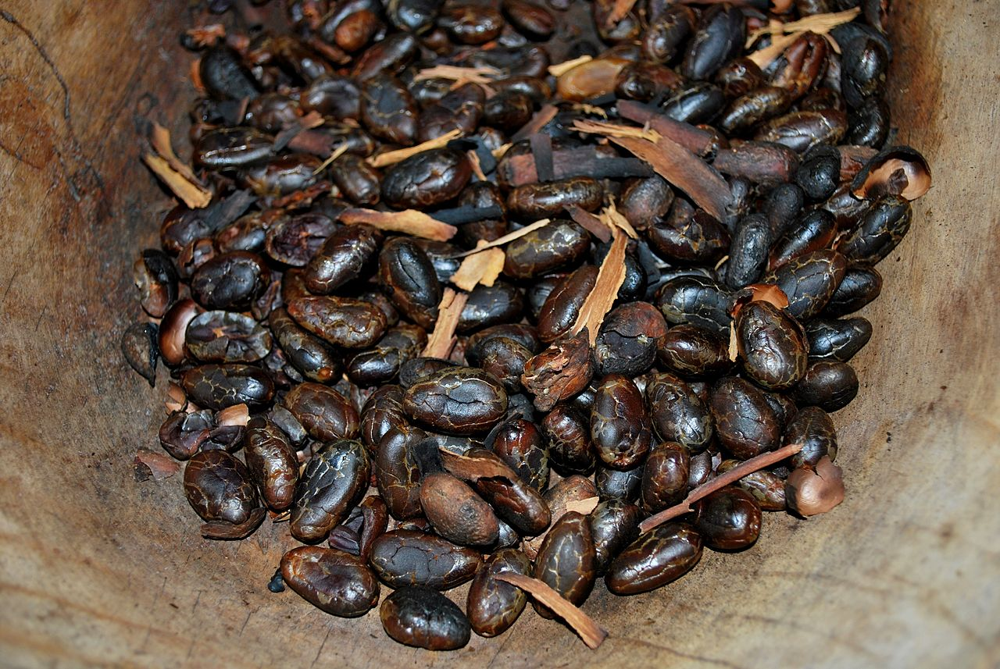
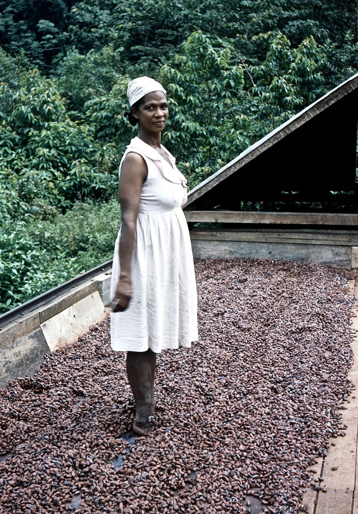
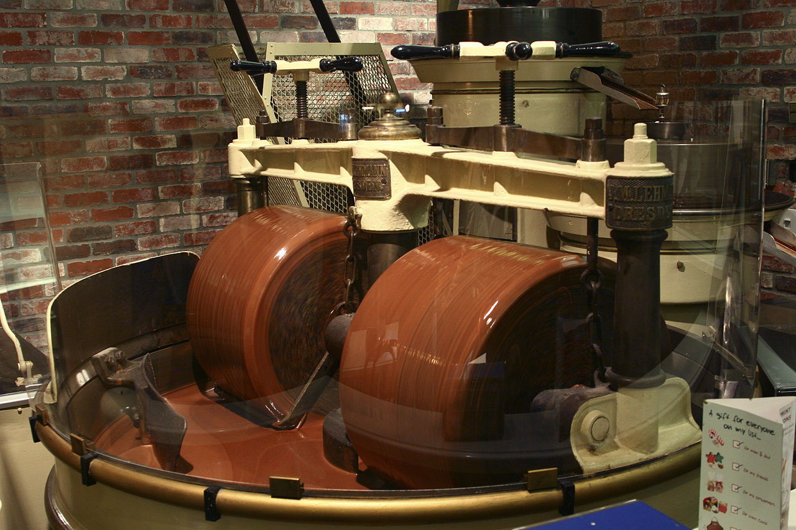
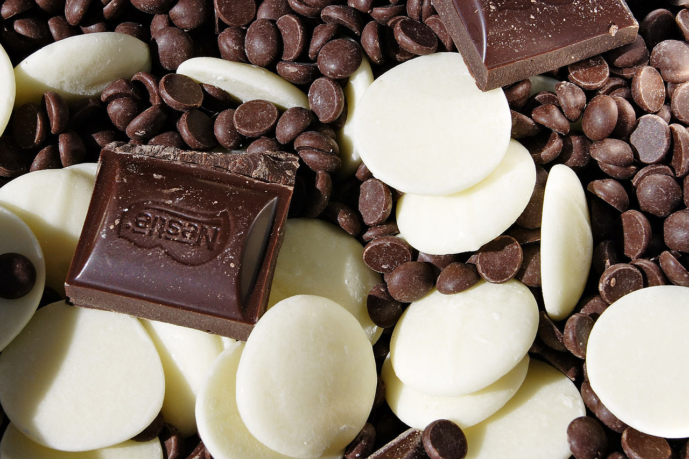
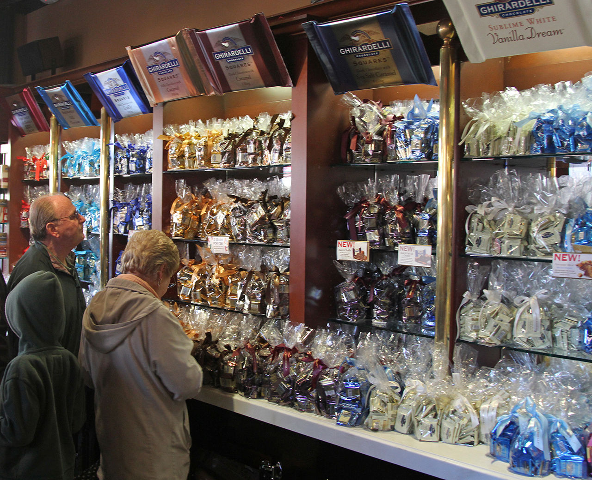

Production
Roughly two-thirds of the entire world's cocoa is produced in West Africa, with 43% sourced from Côte d'Ivoire, where, as of 2007, child labor is a common practice to obtain the product. According to the World Cocoa Foundation, in 2007 some 50 million people around the world depended on cocoa as a source of livelihood. As of 2007 in the UK, most chocolatiers purchase their chocolate from them, to melt, mold and package to their own design. According to the WCF's 2012 report, the Ivory Coast is the largest producer of cocoa in the world. The two main jobs associated with creating chocolate candy are chocolate makers and chocolatiers. Chocolate makers use harvested cacao beans and other ingredients to produce couverture chocolate (covering). Chocolatiers use the finished couverture to make chocolate candies (bars, truffles, etc.).
Production costs can be decreased by reducing cocoa solids content or by substituting cocoa butter with another fat. Cocoa growers object to allowing the resulting food to be called "chocolate", due to the risk of lower demand for their crops.
Genome
The sequencing in 2010 of the genome of the cacao tree may allow yields to be improved. Due to concerns about global warming effects on lowland climate in the narrow band of latitudes where cacao is grown (20 degrees north and south of the equator), the commercial company Mars, Incorporated and the University of California, Berkeley are conducting genomic research in 2017–18 to improve the survivability of cacao plants in hot climates.

Toasted cacao beans at a chocolate workshop at the La Chonita Hacienda in Tabasco.
Cacao varieties
Chocolate is made from cocoa beans, the dried and fermented seeds of the cacao tree. Recent studies suggest the most common genotype of the plant originated in the Amazon and was later transported by humans throughout South and Central America. The scientific name, Theobroma, means "food of the gods".
Cacao trees naturally grow within 20° of either side of the equator because they need about 2000 mm of rainfall a year, and temperatures in the range of 21 to 32 °C. Cacao trees cannot tolerate a temperature lower than 15 °C. The three main varieties of cacao beans used in chocolate are criollo, forastero, and trinitario.
Criollo
Representing only 5% of all cocoa beans grown as of 2008, criollo is the rarest and most expensive cocoa on the market, and is native to Central America, the Caribbean islands and the northern tier of South American states. The genetic purity of cocoas sold today as criollo is disputed, as most populations have been exposed to the genetic influence of other varieties.
Criollos are particularly difficult to grow, as they are vulnerable to a variety of environmental threats and produce low yields of cocoa per tree. The flavor of criollo is described as delicate yet complex, low in classic chocolate flavor, but rich in "secondary" notes of long duration.
Forastero
The most commonly grown bean is forastero, a large group of wild and cultivated cacaos, most likely native to the Amazon basin. The African cocoa crop is entirely of the forastero variety. They are significantly hardier and of higher yield than criollo. The source of most chocolate marketed, forastero cocoas are typically strong in classic "chocolate" flavor, but have a short duration and are unsupported by secondary flavors, producing "quite bland" chocolate.
Trinitario
Trinitario is a natural hybrid of criollo and forastero. Trinitario originated in Trinidad after an introduction of forastero to the local criollo crop. Nearly all cacao produced over the past five decades is of the forastero or lower-grade trinitario varieties.

Image of woman "Dancing the cocoa", El Cidros, Trinidad, c. 1957.
Conching
A conche is a container filled with metal beads, which act as grinders. The refined and blended chocolate mass is kept in a liquid state by frictional heat. Chocolate prior to conching has an uneven and gritty texture. The length of the conching process determines the final smoothness and quality of the chocolate. High-quality chocolate is conched for about 72 hours, and lesser grades about four to six hours. After the process is complete, the chocolate mass is stored in tanks heated to about 45 to 50 °C until final processing.
Processing
Cacao pods are harvested by cutting them from the tree using a machete, or by knocking them off the tree using a stick. The beans with their surrounding pulp are removed from the pods and placed in piles or bins, allowing access to micro-organisms so fermentation of the pectin-containing material can begin. Yeasts produce ethanol, lactic acid bacteria produce lactic acid, and acetic acid bacteria produce acetic acid. The fermentation process, which takes up to seven days, also produces several flavor precursors, eventually resulting in the familiar chocolate taste.
It is important to harvest the pods when they are fully ripe, because if the pod is unripe, the beans will have a low cocoa butter content, or sugars in the white pulp will be insufficient for fermentation, resulting in a weak flavor. After fermentation, the beans must be quickly dried to prevent mold growth. Climate and weather permitting, this is done by spreading the beans out in the sun from five to seven days.
The dried beans are then transported to a chocolate manufacturing facility. The beans are cleaned (removing twigs, stones, and other debris), roasted, and graded. Next, the shell of each bean is removed to extract the nib. Finally, the nibs are ground and liquefied, resulting in pure chocolate in fluid form: chocolate liquor. The liquor can be further processed into two components: cocoa solids and cocoa butter.

Chocolate melanger mixing raw ingredients
Blending
The basic blends of ingredients for the various types of chocolate (in order of highest quantity of cocoa liquor), are:
- Dark chocolate: sugar, cocoa butter, cocoa liquor, and (sometimes) vanilla
- Milk chocolate: sugar, cocoa butter, cocoa liquor, milk or milk powder, and vanilla
- White chocolate: sugar, cocoa butter, milk or milk powder, and vanilla
Usually, an emulsifying agent, such as soy lecithin, is added, though a few manufacturers prefer to exclude this ingredient for purity reasons and to remain GMO-free, sometimes at the cost of a perfectly smooth texture. Some manufacturers are now using PGPR, an artificial emulsifier derived from castor oil that allows them to reduce the amount of cocoa butter while maintaining the same mouthfeel.
The texture is also heavily influenced by processing, specifically conching (see below). The more expensive chocolate tends to be processed longer and thus have a smoother texture and mouthfeel, regardless of whether emulsifying agents are added.
Different manufacturers develop their own "signature" blends based on the above formulas, but varying proportions of the different constituents are used. The finest, plain dark chocolate couvertures contain at least 70% cocoa (both solids and butter), whereas milk chocolate usually contains up to 50%. High-quality white chocolate couvertures contain only about 35% cocoa butter.
Producers of high-quality, small-batch chocolate argue that mass production produces bad-quality chocolate. Some mass-produced chocolate contains much less cocoa (as low as 7% in many cases), and fats other than cocoa butter. Vegetable oils and artificial vanilla flavor are often used in cheaper chocolate to mask poorly fermented and/or roasted beans.
In 2007, the Chocolate Manufacturers Association in the United States, whose members include Hershey, Nestlé, and Archer Daniels Midland, lobbied the Food and Drug Administration (FDA) to change the legal definition of chocolate to let them substitute partially hydrogenated vegetable oils for cocoa butter, in addition to using artificial sweeteners and milk substitutes. Currently, the FDA does not allow a product to be referred to as "chocolate" if the product contains any of these ingredients.
In the EU a product can be sold as chocolate if it contains up to 5% vegetable oil, and must be labelled as "family milk chocolate" rather than "milk chocolate" if it contains 20% milk.
According to Canadian Food and Drug Regulations, a "chocolate product" is a food product that is sourced from at least one "cocoa product" and contains at least one of the following: "chocolate, bittersweet chocolate, semi-sweet chocolate, dark chocolate, sweet chocolate, milk chocolate, or white chocolate". A "cocoa product" is defined as a food product that is sourced from cocoa beans and contains "cocoa nibs, cocoa liquor, cocoa mass, unsweetened chocolate, bitter chocolate, chocolate liquor, cocoa, low-fat cocoa, cocoa powder, or low-fat cocoa powder".

Fountain chocolate is made with high levels of cocoa butter, allowing
it to flow gently over a chocolate fountain to serve as dessert fondue.
Tempering
The final process is called tempering. Uncontrolled crystallization of cocoa butter typically results in crystals of varying size, some or all large enough to be clearly seen with the naked eye. This causes the surface of the chocolate to appear mottled and matte, and causes the chocolate to crumble rather than snap when broken. The uniform sheen and crisp bite of properly processed chocolate are the result of consistently small cocoa butter crystals produced by the tempering process.
The fats in cocoa butter can crystallize in six different forms (polymorphous crystallization). The primary purpose of tempering is to assure that only the best form is present. The six different crystal forms have different properties.
| Crystal |
Melting temp. |
Notes |
| I |
17 °C (63 °F) |
Soft, crumbly, melts too easily |
| II |
21 °C (70 °F) |
Soft, crumbly, melts too easily |
| III |
26 °C (79 °F) |
Firm, poor snap, melts too easily |
| IV |
28 °C (82 °F) |
Firm, good snap, melts too easily |
| V |
34 °C (93 °F) |
Glossy, firm, best snap, melts near body temp. |
| VI |
36 °C (97 °F) |
Hard, takes weeks to form |
As a solid piece of chocolate, the cocoa butter fat particles are in a crystalline rigid structure that gives the chocolate its solid appearance. Once heated, the crystals of the polymorphic cocoa butter are able to break apart from the rigid structure and allow the chocolate to obtain a more fluid consistency as the temperature increases – the melting process. When the heat is removed, the cocoa butter crystals become rigid again and come closer together, allowing the chocolate to solidify.
The temperature in which the crystals obtain enough energy to break apart from their rigid conformation would depend on the milk fat content in the chocolate and the shape of the fat molecules, as well as the form of the cocoa butter fat. Chocolate with a higher fat content will melt at a lower temperature.
Making chocolate considered "good" is about forming as many type V crystals as possible. This provides the best appearance and texture and creates the most stable crystals, so the texture and appearance will not degrade over time. To accomplish this, the temperature is carefully manipulated during the crystallization.
Generally, the chocolate is first heated to 45 °C (113 °F) to melt all six forms of crystals. Next, the chocolate is cooled to about 27 °C (81 °F), which will allow crystal types IV and V to form. At this temperature, the chocolate is agitated to create many small crystal "seeds" which will serve as nuclei to create small crystals in the chocolate. The chocolate is then heated to about 31 °C (88 °F) to eliminate any type IV crystals, leaving just type V. After this point, any excessive heating of the chocolate will destroy the temper and this process will have to be repeated. Other methods of chocolate tempering are used as well. The most common variant is introducing already tempered, solid "seed" chocolate. The temper of chocolate can be measured with a chocolate temper meter to ensure accuracy and consistency. A sample cup is filled with the chocolate and placed in the unit which then displays or prints the results.
Chocolate tempering machines (or temperers) with computer controls can be used for producing consistently tempered chocolate. In particular, continuous tempering machines are used in large volume applications. Various methods and apparatuses for continuous flow tempering have been described by Aasted, Sollich and Buhler, three manufacturers of commercial chocolate equipment, with a focus now on energy efficiency. In general, molten chocolate coming in at 40–50 °C is cooled in heat exchangers to crystallization temperates of about 26–30 °C, passed through a tempering column consisting of spinning plates to induce shear, then warmed slightly to re-melt undesirable crystal formations.

Various chocolate types
Storage
Chocolate is very sensitive to temperature and humidity. Ideal storage temperatures are between 15 and 17 °C (59 and 63 °F), with a relative humidity of less than 50%. If refrigerated or frozen without containment, chocolate can absorb enough moisture to cause a whitish discoloration, the result of fat or sugar crystals rising to the surface. Various types of "blooming" effects can occur if chocolate is stored or served improperly.
Chocolate bloom is caused by storage temperature fluctuating or exceeding 24 °C (75 °F), while sugar bloom is caused by temperature below 15 °C (59 °F) or excess humidity. To distinguish between different types of bloom, one can rub the surface of the chocolate lightly, and if the bloom disappears, it is fat bloom. Moving chocolate between temperature extremes, can result in an oily texture. Although visually unappealing, chocolate suffering from bloom is safe for consumption and taste unaffected. Bloom can be reversed by retempering the chocolate or using it for any use that requires melting the chocolate.
Chocolate is generally stored away from other foods, as it can absorb different aromas. Ideally, chocolates are packed or wrapped, and placed in proper storage with the correct humidity and temperature. Additionally, chocolate is frequently stored in a dark place or protected from light by wrapping paper. The glossy shine, snap, aroma, texture, and taste of the chocolate can show the quality and if it was stored well.

Packaged chocolate in the Ghirardelli Chocolate Company is stored in controlled conditions